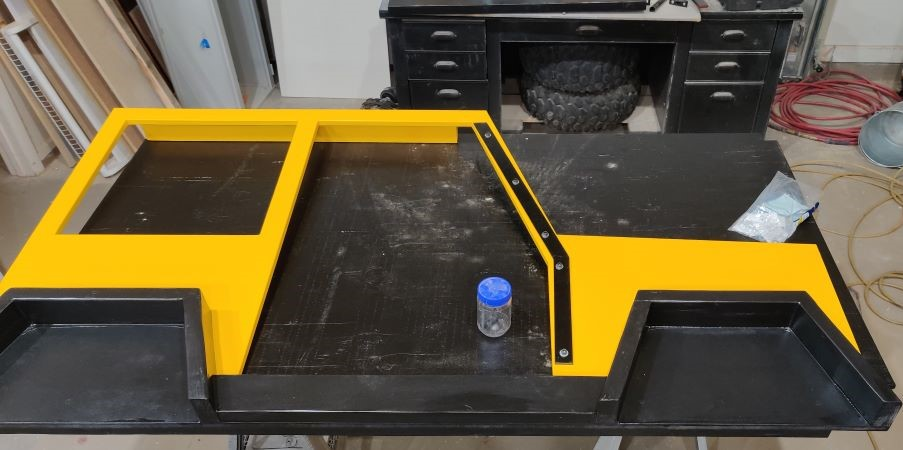
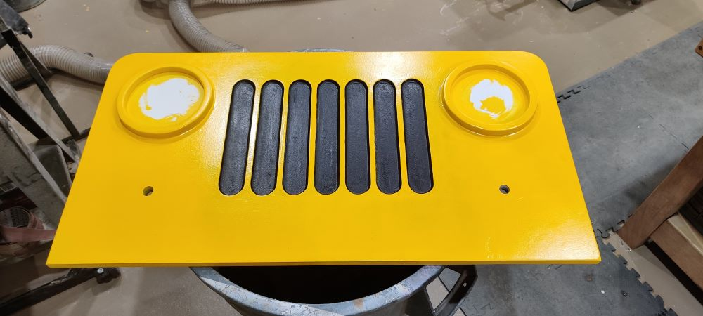
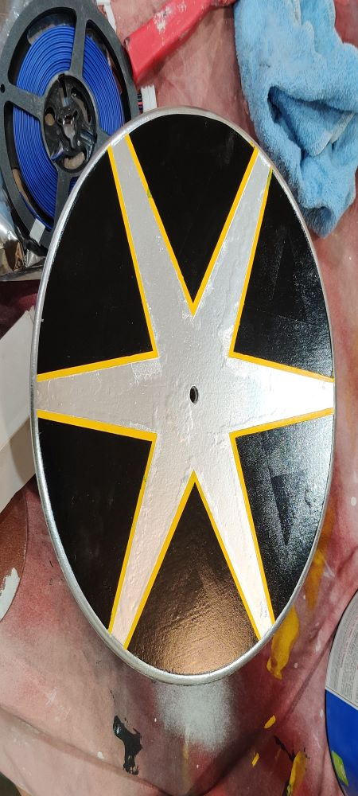
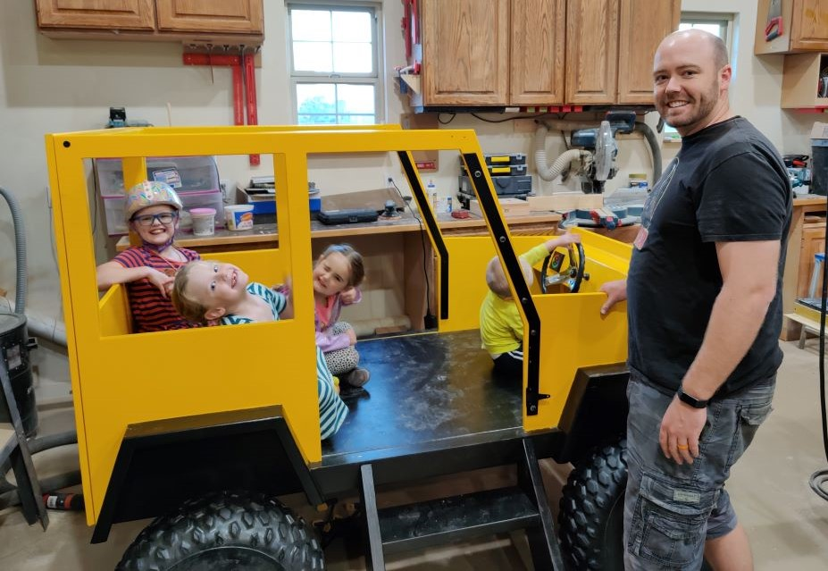
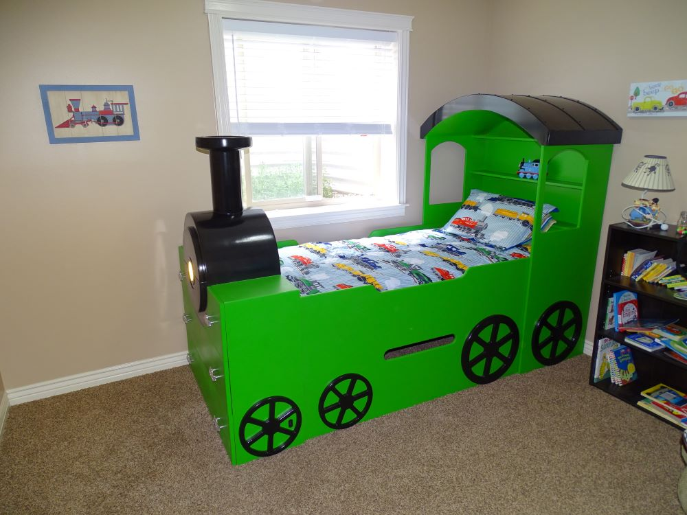
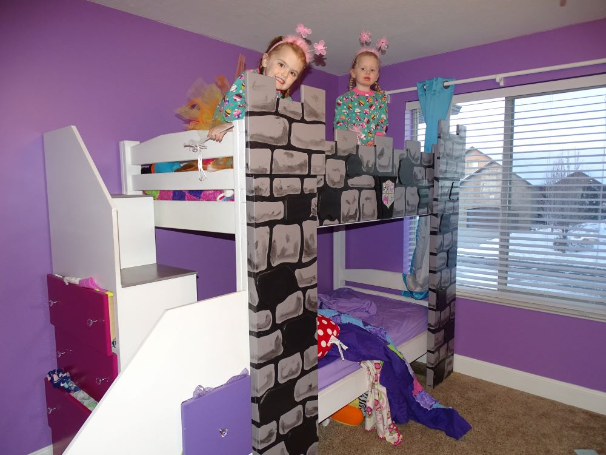

The Making of the Jeep Bed
Jake was so excited to combine his love for cars and woodworking into one with this project! Our son was rapidly growing out of his crib (height runs strong in our families), and was in need of a new bed. Because he was still little, we wanted something that would allow him him to still be protected should he roll all about, but would also be fun for him to play in. After looking at several bed options online, Jake developed this plan for a Jeep bed. Using MDF, 2x4's and some old ATV tires, this was the dry-fit stage. Dry-fitting, or the process of putting something together without or with minimal fasters, is essential to many projects. This ensures that all of the pieces will fit together, and allows for adjustments to be made before paint is applied. Once paint is applied, adjustments take a lot more work!
Once dry-fitting was completed, and minor tweaks and adjustments made to ensure safety, stability, and quality, we were on to painting! With projects like this, painting really makes them come alive! It's always been Brittney's dream to have a yellow Jeep, so yellow was our color choice. Mixing the yellow with black really made it pop! Depending on the type of wood you choose, stain would also be an option. MDF doesn't accept stain very well, or very evenly, due to its pourous nature. Because this was a kid's bed, we opted to go with a sturdy cabinet paint to help avoid chipping and staining (because kids will be kids!).
It's the little details that really make a piece stand out! The grill on the front end of the Jeep is one of Brittney's favorite features. It definitely took a little more time to do it black and yellow, but the effect is outstanding! We ultimately decided to paint the rims of the headlights black as well, which really just finished it off nicely. On top of some really fun colors, Jake used his electrical skills to add a color panel that changes the lights different colors, for night driving in all circumstances of course!
The painting of the hubcaps was a source of some stress for awhile. We couldn't figure out how to make them stand out, and look somewhat real, but also be super fun. Jake had the idea to add the yellow outline in the middle and silver all around the outside. After spray painting the tires black (because they were used, and a little beat up), they looked fantastic with the hubcaps!
We did a test run of the finished product in the shop and it was a complete success! The lights and the steering wheel, complete with a muted train horn, were the favorite parts! Who doesn't want the pretend wind blowing through your hair in a fun bed like this!? Once we got it all set up in our son's room, Brittney's favorite part was the master power switch Jake installed for controlled bedtime. He hooked it up to our home network for an automatic shut off at bedtime. Our son loves showing all of his friends his cool bed with all of its fun features, and mom loves that she doesn't hear the horn when she should hear snoring! It's a win-win situation!
We love to get creative with bedtime! If you can dream it, we can make it happen! Check out these other beds that have been created in our shop!
 